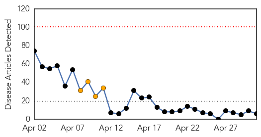
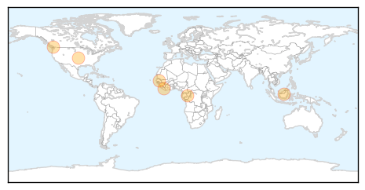
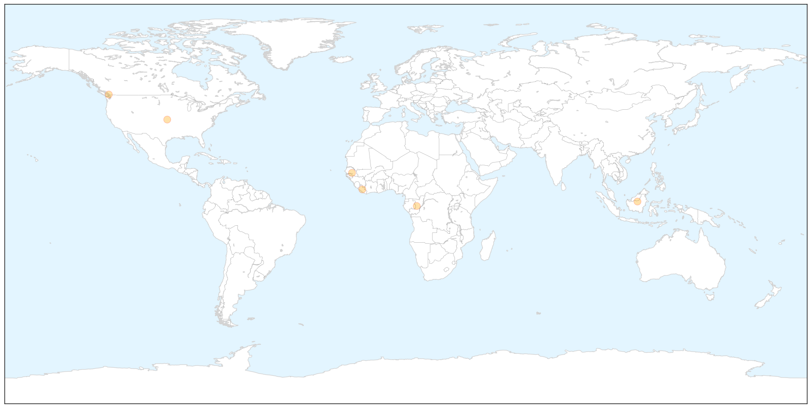
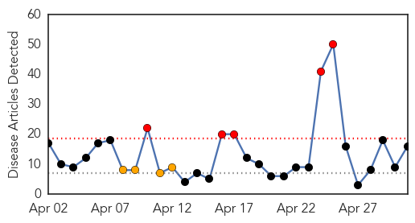
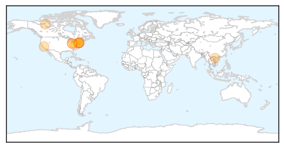
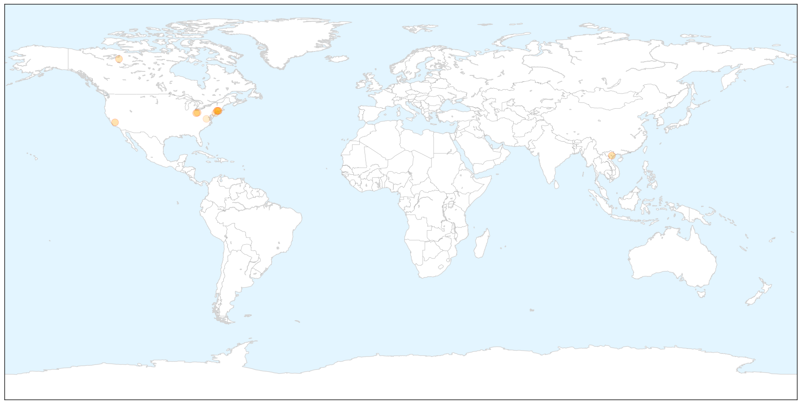
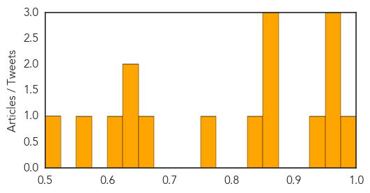

Ebola
30-Day Web Trend
0 alerts, 4 warnings

30-Day Twitter Trend
1 alerts, 0 warnings

Article Locations

X

Article Confidences

Top Articles:
- 1.000
- Frontline reflections on Guinea's battle against Ebola
- 1.000
- Ebola outbreak under control, says Guinea president
- 1.000
- Ebola outbreak under control, says Guinea president – BorneoPost Online
- 1.000
- Ebola outbreak under control: Guinea president
- 1.000
- Ebola Outbreak Under Control per Guinea President
- 0.994
- Canadians not warned about dangers of Ebola virus
Top Tweets:
-
No tweets found for May 01, 2014
Measles
30-Day Web Trend
5 alerts, 4 warnings

30-Day Twitter Trend
0 alerts, 0 warnings

Article Locations

X

Article Confidences
Top Articles:
- 0.996
- Outbreaks of measles and mumps in the U.S.
- 0.957
- SGGP English Edition- Medical workers asked to work in holidays
- 0.955
- Confirmed case of measles at Redding elementary
- 0.951
- Case of measles confirmed at Redding Elementary School
- 0.939
- Vaccines for kids are crucial to public health
- 0.865
- Holmes County confirms two cases of measles - The Daily Record
- 0.858
- Vaccination rate too low to prevent measles outbreak in Saskatchewan
- 0.855
- Fourth measles case reported in state
- 0.848
- N.W.T., Yukon health officials urge up-to-date immunizations
- 0.750
- Fourth measles case reported in state
- 0.670
- County Observes Infant Immunization Week
- 0.637
- NDP, U of A prof criticize province's measles outbreak plan
- 0.628
- More probable measles cases in unimmunized children in Sask.
- 0.609
- Calgary clinics deliver 1,708 measles doses on 1st day
- 0.565
- National Infant Immunization Week marks 20 years
- 0.508
- 4th Case Of Measles Reported In State
Top Tweets:
-
No tweets found for May 01, 2014